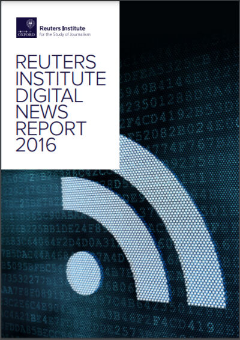
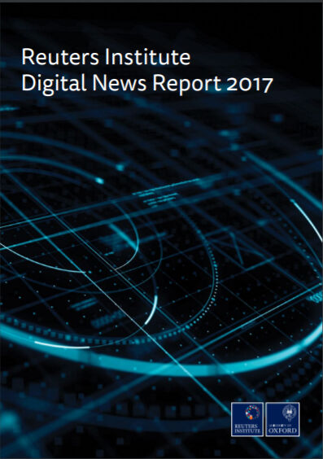
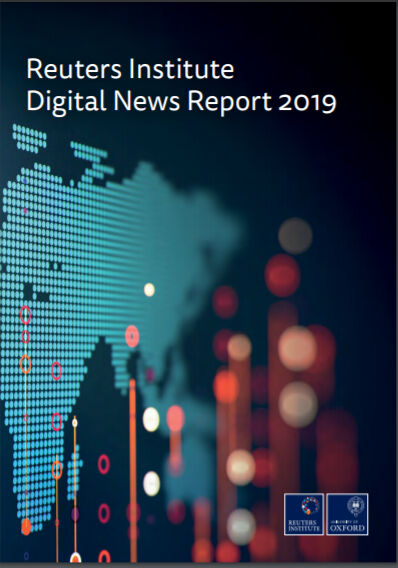

Trainees Edition
Trainers Edition
Trainees Edition
Trainers Edition
7.nodarbība: globālo ziņu patēriņa tendences
Nodarbības saturs
Šīs nodarbības galvenais mērķis ir piedāvāt pārskatu par globālo ziņu patēriņa tendencēm, lai veidotu izpratni par ziņu auditorijas attieksmi, paradumiem un vēlmēm, cilvēku informētību par jaunumiem un saistītajām problēmām, par ziņu mainīgo vidi dažādās valstīs, laikos, kultūrās un dažādās demogrāfijās.
Nodarbības sekundārais mērķis ir sniegt vadlīnijas pasniedzējiem, kuri vēlas izmantot nodarbības saturu, lai mācītu studentiem izpratni par ziņu patēriņa tendencēm, palīdzēt izvēlēties efektīvākos līdzekļus, lai cīnītos pret dezinformāciju, kā arī izstrādātu vispiemērotāko saturu ziņu pratības mācību programmām.
Nodarbība sekmēs izpratni par ieteicamajiem ziņu avotiem, vēlamajiem piekļuves punktiem, uzticēšanos ziņu medijiem, dezinformācijas kanāli, formātu izvēle, ziņu pratības ietekme, kā arī vadlīnijas par to, kā mācīt šo priekšmetu.
Studenti, kuri būs sekmīgi pabeiguši šo nodarbību spēs izprast:
- globālas ziņu patēriņa tendences
- ziņu auditorijas attieksmi, paradumus un vēlmes
- ziņu auditorijas informētību un bažas par jautājumiem, kas saistīti ar jaunumiem
- mainīgo vidi saistībā ar ziņām dažādās valstīs, laikos, kultūrās un demogrāfiskajās situācijās.
Papildus tam pasniedzēji, kuri būs sekmīgi apguvuši šo nodarbību, iegūs izpratni par to, kā nodot tālāk zināšanas par šo tēmu.
Nodarbības struktūra
Nodarbība sastāv no šādām daļām:
- nodarbības apraksts (mērķi, satura izklāsts un mācību rezultāti),
- nodarbības struktūra,
- vadlīnijas studentiem,
- vadlīnijas pasniedzējiem (kā sagatavoties, izmantojamās metodes, ieteikumi),
- saturs (mācību materiāli),
- tests,
- informācijas resursi (izmantotie avoti, ieteicamie avoti un video).
Galvenie nodarbības mērķi, satura izklāsts un mācību rezultāti ir raksturoti nodarbības apraksta daļā. Saturs ietver visus mācību materiālus. Tests sastāv no jautājumiem ar atbilžu variantiem un apgalvojumiem, kuriem jāatzīmē, vai tie ir patiesi vai aplami, kas palīdzēs novērtēt studenta sekmes. Informācijas resursi ir dalīti divās sadaļās – izmantotie avoti un ieteicamie avoti tālākai pētniecībai. Izmantotie avoti ir to materiālu saraksts, kas citēti mācību materiālā. Ieteicamie avoti satur papildu informācijas avotus un video, kurus būtu ieteicams izlasīt un noskatīties, lai labāk izprastu tēmu. Vadlīnijas studentiem iekļauj instrukcijas un ieteikumus studentiem. Vadlīnijas pasniedzējiem palīdz dažādās mācību procesa fāzēs un sniedz noderīgus ieteikumus.
Vadlīnijas studentiem
Nepieciešams izlasīt tekstu un noskatīties ieteikto video. Ieteicamie informācijas avoti var palīdzēt labāk izprast tēmu. Pēc mācību materiāla apgūšanas vēlams izpildīt testu, lai novērtētu savas sekmes. Ja nepieciešams, mācību materiālu var pārskatīt atkārtoti.
Vadlīnijas pasniedzējiem
Vadlīnijas pasniedzējiem ietver padomus un ieteikumus, kā studentiem pasniegt nodarbības tēmu par globālo ziņu patēriņa tendencēm un mainīgo ziņu vidi dažādās valstīs, laikos, kultūrās un demogrāfijās.
Sagatavošanās
Sagatavot prezentāciju (PowerPoint/Prezi/Canva) par nodarbības tēmu, kas papildināta ar grafikiem vai faktiem (pierādījumiem), tie ir ļoti ieteicami. Izvēloties un prezentējot ieteicams izmantot vietējos piemērus (konkrētās valsts) un arī globālos piemērus.
Šī satura daļa ir bieži jāatjaunina. Tāpēc ņemiet jaunākos Reuters gada pārskatus un vajadzības gadījumā veiciet papildinājumus un izmaiņas. Ja jūsu valsts ir iekļauta Reuters aptaujā, iekļaujiet savās prezentācijās informāciju par jūsu valsti. Ja jūsu valsts nav iekļauta Reuters izlasē, mēģiniet iegūt pētījumu rezultātus no citiem avotiem.
Darba uzsākšana
Īss tests (3-5 jautājumi), izmantojot platformu Kahoot vai Mentimeter, lai iesaistītu studentus vai pārbaudītu esošās zināšanas.
Izmantojamās metodes
Mācību procesā var izmantot dažādas metodes, piemēram:
- lekcija,
- diskusija,
- darbs grupās,
- pašrefleksija.
Padomi pasniedzējiem
Iesildīšanās
Lai efektīvi iesaistītu dalībniekus mācību procesā un vienotos par to, kas tiks apgūts nodarbības laikā, tās sākumā var uzdot iesildošus jautājumus pa to kā mainījusies viņu ziņu skatīšanā uzvedība pēdējā desmitgadē.
Pēc diskusijas pārliecinieties, ka studenti izprot, ka ziņu vide ir atšķirīga dažādās kultūrās, laikos un demogrāfijās.
Nodarbības mērķa paskaidrošana
Nodarbības mērķim jābūt skaidram, šajā gadījumā izprast ziņu auditorijas attieksmi, paradumus, bažas, informētību un vēlmes, kā arī mainīgo ziņu vidi dažādās valstīs, laikā, kultūrā un demogrāfijās. Pēc iesildošajiem jautājumiem būs vieglāk izskaidrot nodarbības mērķus.
Nodarbības satura izklāsts
Iepazīstinot ar nodarbības saturu, pārliecinieties, ka mijiedarbojieties ar studentiem un iedrošiniet viņus aktīvi iesaistīties:
- Pirms sniegt pārskatu par mainīgo vidi saistībā ar ziņām dažādās valstīs, laikā, kultūrā un demogrāfiskajās iezīmēs, lūdziet dalībniekus par to sīkāk pastāstīt.
- Demonstrējot globālos skaitļus, norādiet arī valstij specifiskus skaitļus un veiciet salīdzinājumus.
- Pēc visaptverošā pārskata par globālajām tendencēm ziņu vidē, pajautājiet dalībniekiem, cik svarīgas ir šīs zināšanas mācību programmas izstrādei ziņu pratības jomā.
Noslēgums
Sniedziet nodarbības kopsavilkumu un uzdodiet dažus jautājumus, kas palīdzētu izcelt būtiskāko satura izklāstā. Pajautājiet studentiem, vai viņi apzinās dažādās atšķirības ziņu vidē, vai šīs zināšanas palielina viņu izpratni par šo jautājumu.
Pēc diskusijām pārliecinieties, ka studenti saprot, ka ir dažādas atšķirības un faktori (laiks, valstis un demogrāfija), kas ietekmē indivīdu ziņu patēriņa paradumus, un tā ir vērtīga informācija mērķtiecīgai apmācībai.
Saturs: globālo ziņu patēriņa tendences
Ievads
Zināšanas par ziņu auditorijas attieksmi, ieradumiem un uzvedību ir svarīgas, lai izprastu ziņu mainīgo vidi, valsts un demogrāfiskās īpatnības (piemēram, vecuma atšķirības). Šī izpratne palīdz izvēlēties efektīvākos līdzekļus, lai apkarotu dezinformāciju, kā arī izstrādātu vispiemērotāko saturu (kas pievēršas vājajiem punktiem) ziņu pratības mācību programmām.
Oksfordas Universitātes Reuters žurnālistikas studiju institūts kopš 2012. gada publicē ikgadējus ziņojumus par to, kā ziņas tiek patērētas dažādās valstīs. Šie ziņojumi ir sagatavoti, pamatojoties uz tūkstošiem cilvēku aptaujām desmitiem valstu no dažādiem kontinentiem. (piemēram, aptuveni 50 000 cilvēku no 26 valstīm 2016. gadā, vairāk nekā 74 000 cilvēku no 37 valstīm 2018. gadā, vairāk nekā 80 000 cilvēku no 40 valstīm 2020. gadā).
Tas ir visplašākais salīdzinošais pētījums par ziņu patēriņu pasaulē. Eiropa joprojām ir fokusā, taču Reuters ziņojumos ir iekļautas arī valstis no Āzijas, Latīņamerikas, Āfrikas un Ziemeļamerikas. Šeit apkopoti pēdējo piecu gadu ziņojumu galvenie secinājumi.
Liela daļa 2020. gada ziņojumā iekļauto datu tika savākti, pirms Covid-19 vīruss skāra daudzas aptaujā iekļautās valstis, tāpēc 2020. gada ziņojums lielā mērā atspoguļo tendences pirms pandēmijas. Tomēr, lai saprastu, kas ir mainījies, 2020. gada aprīļa sākumā (pēc pandēmijas uzliesmojuma) galvenās aptaujas daļas tika atkārtotas sešās valstīs (Apvienotajā Karalistē, ASV, Vācijā, Spānijā, Dienvidkorejā un Argentīnā). Pēc pandēmijas sākuma pētījuma rezultāti tiks aplūkoti atsevišķi.
Ziņu avoti
Laikā no 2012. līdz 2017. gadam ir vērojama konsekventa tendence lielākajā daļā valstu attiecībā uz ziņu avotiem kurus cilvēki izmanto. Televīzijas ziņas (aptuveni 70% 2016. gadā) un tiešsaistes ziņas (apmēram 75% 2016. gadā) ir visbiežāk izmantotās, savukārt drukāto laikrakstu lasītāju skaits ir būtiski samazinājies (no aptuveni 40% līdz 25% 2016. gadā). Lielākās izmaiņas ir bijušas ziņu skaita pieaugumam, izmantojot sociālo mediju vietnes, piemēram, Facebook, Twitter un Instagram (Newman, Fletcher, Kalogeropoulos, Levy & Nielsen, 2016, lpp. 8; 2017, lpp. 10). To cilvēku procentuālais daudzums, kuri apgalvo, ka izmanto sociālos medijus kā ziņu avotu, ir pieaudzis līdz 46% ASV (gandrīz dubultojies no 2013. līdz 2016. gadam), un Eiropā ir novērotas dažas atšķirības starp valstīm (Apvienotajā Karalistē 35% un Vācijā 31%). Visās 26 valstīs 2016. gadā vismaz katrs desmitais (12%) apgalvoja, ka sociālie mediji ir viņu galvenais ziņu avots, un vēl augstāki rādītāji Austrālijā (18%) un Grieķijā (27%) (Newman, Fletcher, Kalogeropoulos, Levy & Nielsen, 2016, lpp. 7-8).

Dati liecina par būtisku paaudžu šķelšanos ziņu avotu izmantošanā. Visās valstīs jaunākās grupas daudz biežāk izmanto sociālos medijus un digitālos medijus kā galveno ziņu avotu, savukārt vecākās grupas pieturas pie ieradumiem, ar kuriem tās uzauga (televīzija, radio un drukātā prese; no tām televīzijas ziņas atzīmētas, kā vissvarīgākās). Trešā daļa no 18 līdz 24 gadu vecuma grupā (33%) apgalvo, ka (2017. gadā) sociālie mediji ir viņu galvenais ziņu avots — tas ir vairāk nekā tiešsaistes ziņu vietnes (31%) un vairāk nekā TV ziņas un drukātie laikraksti kopā (29%) (Newman, Fletcher, Kalogeropoulos, Levy & Nielsen, 2017, lpp. 7, 10).
Televīzija joprojām ir svarīgs ziņu avots daudziem arī 2018. gadā, savukārt ziņu lietotņu, e-pasta biļetenu un mobilo paziņojumu nozīme turpina pieaugt (Newman, Fletcher, Kalogeropoulos, Levy & Nielsen, 2018, lpp. 9). Savukārt jaunākais pēdējo deviņu gadu Reuters datu novērtējums liecina, ka tiešsaistes ziņas pārspēj televīziju kā visbiežāk izmantotais ziņu avots daudzās aptaujā iekļautajās valstīs. Drukāto laikrakstu skaits turpina samazināties, savukārt sociālie mediji pēc straujā kāpuma ir nostabilizējušies (Newman, Fletcher, Kalogeropoulos, Levy & Nielsen, 2020, lpp. 11).
Ziņu izmantošana sociālajos medijos pēc gadiem ilgas nepārtraukta pieauguma ir sākusi samazināties vairākās valstīs. 2018. gadā daudzās valstīs pieaugums apstājās vai kritās. Ņemot par piemēru ASV, iknedēļas ziņu izmantošana sociālajos medijos nepārtraukti pieauga no 27% 2013. gadā līdz 51% maksimumam 2017. gadā, bet 2018. gadā ievērojami samazinājās līdz 45%. Apvienotajā Karalistē lietojums pieauga no 20% 2013. gadā līdz 41 % 2017. gadā, bet pēc tam 2018. gadā samazinājās līdz 39%. Šķiet, ka Brazīlijā samazinājums sākās 2016. gadā, tomēr lietojums joprojām pārsniedz 65% (Newman, Fletcher, Kalogeropoulos, Levy & Nielsen, 2018, lpp. 9-10).
2019. gadā daudzās valstīs cilvēki sāka pavadīt mazāk laika Facebook un vairāk laika WhatsApp un Instagram nekā iepriekšējos gados. Tomēr Facebook joprojām ir vissvarīgākais ziņu sociālais tīkls. Ir vērojams pieaugums ziņojumapmaiņas lietotņu izmantošanā ziņām, jo patērētāji meklē privātāku telpu saziņai. WhatsApp ir kļuvis par galveno tīklu ziņu apspriešanai un kopīgošanai ārpus Rietumu valstīm, piemēram, Brazīlijā (53%), Malaizijā (50%) un Dienvidāfrikā (49%). Publiskas un privātas Facebook grupas, kurās tiek apspriestas ziņas un politika, ir kļuvušas populāras Turcijā (29%) un Brazīlijā (22%), taču tās daudz retāk izmanto Rietumvalstīs, piemēram, Kanādā (7%) vai Austrālijā (7%) (Newman, Fletcher, Kalogeropoulos, Levy & Nielsen, 2019, lpp. 9).
Avots: Pixnio
Ziņojumapmaiņas lietotņu izmantošanas straujo pieaugumu galvenokārt nosaka divi faktori. Pirmais ir tas, ka cilvēku tīkls Facebook laika gaitā ir kļuvis tik plašs, ka cilvēki vairs nejūtas ērti kopīgot saturu atklāti, tāpēc viņi pārceļ diskusijas uz ziņojumapmaiņas lietotnēm, kur var būt pārliecināti, ka sarunājas ar tuvu draugu loku. Otrais ir tas, ka šifrētas ziņojumapmaiņas lietotnes, piemēram, WhatsApp, ir izrādījušās samērā droša vieta vārda brīvībai (piemēram, politiskajiem uzskatiem). Tas ir svarīgs faktors, jo īpaši tādās autoritārās valstīs kā Turcija, Malaizija un Honkonga. Reuters aptaujas rezultāti liecina par spēcīgu saistību starp ziņojumapmaiņas lietotņu izmantošanu (piemēram: WhatsApp) un drošību politiskā viedokļa paušanu (Newman, Fletcher, Kalogeropoulos, Levy & Nielsen, 2018, lpp. 12-13).
Covid-19 lokdauna laikā plašsaziņas līdzekļu lietošanas paradumi būtiski mainījās. Mazāka mēroga aptauja, kas veikta tikai sešās valstīs pirms un pēc pandēmijas sākuma (gan 2020. gada janvārī, gan aprīlī), liecina, ka: vairāk cilvēku pievērsās televīzijas ziņu tiešraidēm (iknedēļas TV ziņu patēriņš pieauga vidēji par pieciem procentpunktiem visās sešās valstīs) un uzticamiem ziņu avotiem tiešsaistē. Taču arī sociālie mediju izmantojums ievērojami palielinājās (+5), jo arvien vairāk cilvēku izmantoja šos tīklus, lai atrastu un dalītos ar ziņām no televīzijas un tiešsaistes vietnēm. Turklāt lokdauns arī paātrināja jaunu digitālo rīku izmantošanu, jo daudzi cilvēki pirmo reizi pievienojās tiešsaistes grupām vai piedalījās video konferencēs (Newman, Fletcher, Kalogeropoulos, Levy & Nielsen, 2020, lpp. 10-13).
Vēlamie piekļuves punkti (vārti un starpnieki) ziņām
Lielākā daļa Reuter 2018. gada aptaujas respondentu (65%) dod priekšroku ziņām piekļūt pastarpināti, nevis ejot tieši uz ziņu vietni vai lietotni. Vairāk nekā puse (53%) dod priekšroku piekļūt ziņām, izmantojot meklētājprogrammas, sociālos medijus vai ziņu apkopotājus, saskarnes, kas izmanto rezultātu kārtošanas algoritmus, lai atlasītu stāstus, nevis izmanto saskarnes, ko vada cilvēki vai redaktori (Newman, Fletcher, Kalogeropoulos, Levy & Nielsen, 2018, lpp. 13).
Tomēr starp vidējiem rādītājiem tika konstatētas ļoti būtiskas atšķirības starp valstīm. Divas trešdaļas respondentu Somijā (65%) un Norvēģijā (62%) dod priekšroku tieši apmeklēt vietni vai lietotni. No otras puses, piekļuve bieži tiek nodrošināta, izmantojot sociālos medijus, šo iespēju izmanto vairāk nekā četri no desmit cilvēkiem Čīlē (43%), Bulgārijā (42%) un Malaizijā (40%). Dažās Āzijas valstīs agregatori vai meklētājprogrammas ir galvenie vārti uz ziņām. Dienvidkorejā 47% apgalvo, ka dod priekšroku ziņām piekļūt, izmantojot meklēšanu, 30% — ziņu agregatorus, un tikai 5% dod priekšroku konkrētai ziņu vietnei vai lietotnei. Japānā, kur Yahoo! ir galvenais ziņu portāls, šis skaitlis ir tikai 15%. Šīs atšķirības izvēlētajos piekļuves punktos ir būtiskas. Tās liecina, ka Ziemeļvalstu ziņu veidotājiem joprojām ir tiešas attiecības ar saviem lasītājiem. No otras puses, Korejas un Japānas ziņu veidotāji ir daudz vairāk atkarīgi no trešo pušu platformām, lai piekļūtu auditorijai (Newman, Fletcher, Kalogeropoulos, Levy & Nielsen, 2018, lpp. 14).
Avots: Wikimedia Commons
Runājot par piekļuves punktiem tiešsaistes ziņām, 2020. gadā paradumi turpina kļūt izplatītāki, jo arvien vairāk cilvēku izmanto dažādas digitālās platformas, kuras sākotnēji visintensīvāk izmantoja gados jaunāki cilvēki. Visās valstīs nedaudz vairāk kā ceturtā daļa (28%) dod priekšroku ziņu meklējumus sākt ar vietni vai lietotni, kam seko sociālie mediji (26%). Cilvēkiem vecumā no 18 līdz 24 gadiem (tā sauktā Z paaudze) ir vēl vājāka tiešā saikne ar ziņu zīmoliem (16%), un viņi gandrīz divas reizes biežāk dod priekšroku jaunumiem piekļūt sociālajos medijos (38%). Visās vecuma grupās Instagram izmantošana ziņām kopš 2018. gada ir dubultojusies (Newman, Fletcher, Kalogeropoulos, Levy & Nielsen, 2020, lpp. 23).
Kā liecina pētījumi, vairāk cilvēku patērē ziņas, kuras atlasījis algoritms, nevis redaktors. Vairāk nekā puse aptaujas dalībnieku (54%) 2017. gadā dod priekšroku veidiem, kuros sižetu atlasei tiek izmantoti algoritmi, nevis redaktori vai žurnālisti (44%). Šis efekts ir vēl pamanāmāks tiem, kuri galvenokārt izmanto viedtālruņus (58%) un ir gados jaunāki lietotāji (64%). (Newman, Fletcher, Kalogeropoulos, Levy & Nielsen, 2017, lpp. 23).
No vienas puses, daudzi cilvēki izmanto sociālos tīklus un ziņu agregatorus, lai iegūtu tiešsaistes ziņas. Priekšroka tiek dota agregatoriem gan atjaunināšanas ātruma, gan ērtības dēļ, apvienojot vairākus avotus vienā vietā, savukārt sociāliem tīkliem tiek dota priekšroka interaktivitātes dēļ. No otras puses, respondenti visur pauž zināmas bažas par algoritmu iespējamo negatīvo ietekmi, un norvēģi un briti ir tie, kuri visvairāk baidās, ka galvenā informācija vai izaicinoši viedokļi var tikt pazaudēti algoritmiski vadītā filtra burbulī (Newman, Fletcher, Kalogeropoulos, Levy & Nielsen, 2016, lpp. 11-12).
Izvairīšanās no ziņām un ziņu pārslodze
Polarizācija, dezinformācija un zema uzticēšanās nav vienīgās problēmas, ar kurām šodien saskaras ziņu nozare. Pastāv arī izvairīšanās no jaunumiem un ziņu pārslodzes. Reuters 2019. gada aptaujas dati liecina, ka gandrīz trešā daļa (32%) dalībnieku aktīvi izvairās no ziņām. Salīdzinot ar 2017. gada datiem, izvairīšanās gadījumu skaits ir palielinājies par 3 procentpunktiem kopumā un par 11 punktiem Apvienotajā Karalistē, ko izraisa garlaicība, dusmas vai skumjas par Brexit. Cilvēki saka, ka izvairās no ziņām, jo tās negatīvi ietekmē viņu garastāvokli (58%) vai tāpēc, ka viņi jūtas bezspēcīgi mainīt notikumus, vai tāpēc, ka viņi nevar paļauties uz to, ka ziņas ir patiesas. Vislielākā izvairīšanās no ziņām ir Horvātijā (56%), Turcijā (55%) un Grieķijā (54%). Viszemākā Japānā (11%), kur ziņu lasīšana bieži tiek uzskatīta par pienākumu (Newman, Fletcher, Kalogeropoulos, Levy & Nielsen, 2019, lpp. 10, 26; 2017, lpp. 9).

Tāpat aptuveni viena trešdaļa dalībnieku (28%) piekrīt, ka mūsdienās ir pārāk daudz ziņu, un pastāvīgi atjauninājumi un dažādas perspektīvas apgrūtina saprast, kas patiesībā notiek. Izplatītākā sūdzība ir, ka lietotāji tiek bombardēti ar vairākām viena stāsta vai viena brīdinājuma versijām. Ir pārāk daudz pretrunīgu un mulsinošu ziņu. Visaugstākā ziņu pārslodzes ir ASV (40%). Ziņu pārslodze ir zemāka valstīs ar mazāku ziņu izdevēju skaitu, piemēram, Dānijā (20%) un Čehijā (16%) (Newman, Fletcher, Kalogeropoulos, Levy & Nielsen, 2019, lpp. 26).
Pierādījumi, ka daži cilvēki izvairās no ziņām vai ir noguruši no ziņu daudzuma, rada jaunas iniciatīvas, piemēram, lēnās ziņas un konstruktīvo žurnālistiku, kā arī skaidrojošo žurnālistiku (Newman, Fletcher, Kalogeropoulos, Levy & Nielsen, 2019, lpp. 27).
Dalīšanās ar ziņām
Sociālie tīkli mudina ne tikai atklāt, bet arī apspriest un dalīties ar jaunumiem. Apmēram ceturtā daļa interneta ziņu lietotāju (24%) vidēji nedēļā dalās ar ziņām sociālajos medijos; tie ir cilvēki, kurus ļoti interesē politika, bizness, tehnoloģijas vai vide (Newman, Fletcher, Kalogeropoulos, Levy & Nielsen, 2016, lpp. 10).
Lielākā daļa cilvēku pārsvarā dalās ar pozitīvām ziņām, kurām viņi piekrīt (Somija, Austrālija un ASV), kas savukārt var ietekmēt to pozitīvo ziņu apjomu, ar kurām viņi saskaras. Turpretim Apvienotajā Karalistē mēdz būt ciniskāka attieksme un viņi salīdzinoši biežāk dalās ar lietām, kas viņiem nepatīk (Newman, Fletcher, Kalogeropoulos, Levy & Nielsen, 2016, lpp. 10).
Izvēle starp objektīvām vai neobjektīvām ziņām
Reuters 2020. gada aptauja liecina, ka lielākā daļa (60%) dod priekšroku ziņām, kurām nav īpaša viedokļa vai nostājas, un tikai mazākums (28%) dod priekšroku ziņām, kas atbalsta vai pastiprina viņu uzskatus. Tas nav pārsteidzoši, ņemot vērā to, ka tradicionālās cerības ir, ka žurnālistiem jāsniedz neitrālas ziņas, bez konkrētas nostājas, taču atšķirības starp valstīm ir pārsteidzošas. Priekšroka neitrālām ziņām ir Vācijā, Japānā, Apvienotajā Karalistē un Dānijā – visās valstīs, kurās ir spēcīgi un neatkarīgi sabiedriskie mediji. Priekšroka neobjektīvām ziņām ar personīgu viedokli ir spēcīgāka Spānijā, Francijā un Itālijā, kā arī ASV (Newman, Fletcher, Kalogeropoulos, Levy & Nielsen, 2020, lpp. 15).
ASV, kur gan politika, gan plašsaziņas līdzekļi gadu gaitā ir kļuvuši arvien partizāniskāki, Reuters pētnieki atklāj (par sešiem procentpunktiem no 2013. līdz 2020. gadam) pieaudzis to cilvēku īpatsvars, kuri saka, ka dod priekšroku ziņām, kas saskan ar viņu viedokli. Gluži pretēji, laika gaitā Apvienotajā Karalistē to cilvēku īpatsvars, kuri dod priekšroku ziņām, kas piekrīt viņu viedoklim, ir samazinājies par sešiem procentpunktiem. Aptaujas dati arī liecina, ka dažādās valstīs jaunieši dod priekšroku ziņām, kurās ir pausts viedoklis (Newman, Fletcher, Kalogeropoulos, Levy & Nielsen, 2020, lpp. 16-17).
Patiesībā lielākajai daļai cilvēku patīk jaukt ziņas, kurām viņi var uzticēties, ar dažādiem viedokļiem, kas apstrīd vai atbalsta viņu esošos uzskatus. Reuters 2020. gada pētījums tomēr atklāj, ka tos, kuriem ir ekstrēmi politiskie uzskati, ievērojami mazāk piesaista objektīvas ziņas (Newman, Fletcher, Kalogeropoulos, Levy & Nielsen, 2020, lpp. 17).
Uzticēšanās jaunajiem medijiem
Visās valstīs mazāk nekā puse Reuters 2018. gada aptaujas dalībnieku (44%) apgalvo, ka lielākoties uzticas plašsaziņas līdzekļiem, taču viņi, visvairāk uzticas tiem plašsaziņas līdzekļiem, kurus viņi paši izmanto biežāk (51%). Turpretim tikai trešā daļa no izlases saka, ka uzticas ziņām, ko atrod meklētājprogrammās (34%), savukārt ziņas sociālajos medijos tiek uzskatītas par vēl neuzticamākām (23%). Aplūkojot detalizētākus datus, sākot no 2018. gada attiecībā uz vispārējo ziņu uzticamību, ir vērojama lielāka mainība un ievērojamas atšķirības dažādās valstīs. Ziņu uzticamībā Somija stabili turas augšgalā (62%) kopā ar Portugāli (62%), bet Grieķija (26 %) un Dienvidkoreja (25 %) joprojām ir ierindojušies zemākajā vietā, lai gan to rādītāji ir pieauguši par 2 procentpunktiem. Uzticība ziņām ir ievērojami pieaugusi vairākās valstīs, jo īpaši Īrijā, Kanādā, Nīderlandē un Slovākijā. Uzticības samazināšanās bieži vien šķiet saistīta ar politisko spriedzi. Uzticēšanās Spānijā ir samazinājusies par 7 punktiem (44%) pēc Katalonijas referenduma. Tā ir samazinājusies arī Austrijā (-4) pēc skandalozām vēlēšanām un Polijā (-5), kur valdība ir apsūdzēta par represijām pret privātajiem plašsaziņas līdzekļiem, lai apkarotu "viltus ziņas" (Newman, Fletcher, Kalogeropoulos, Levy & Nielsen, 2018, lpp. 16).
Reuters aptauja arī atklāj visvairāk un vismazāk uzticamos zīmolus 37 valstīs. Rezultāti liecina, ka ziņu zīmoliem ar apraides pieredzi un ilgu pastāvēšanu parasti uzticas visvairāk, bet digitālajiem zīmoliem - vismazāk (Newman, Fletcher, Kalogeropoulos, Levy & Nielsen, 2018, lpp. 9).
2019.gadā visās valstīs vidējais uzticamības līmenis ziņām kopumā ir samazinājies par 2 procentpunktiem līdz 42%, un mazāk nekā puse (49%) piekrīt, ka uzticas ziņu medijiem, ko paši izmanto. Uzticamības līmenis Francijā ir samazinājies līdz 24% (-11) pēc tam, kad medijos tika atspoguļota Dzelteno vestu kustība. Uzticamība ziņām, kas atrodamas, izmantojot meklēšanu (33%) un sociālos medijus, joprojām ir stabila, taču ārkārtīgi zema (23%) (Newman, Fletcher, Kalogeropoulos, Levy & Nielsen, 2019, lpp. 9).
Šķiet, ka arī 2020. gadā uzticamība ziņu medijiem turpina kristies visā pasaulē. Reuters 2020. gada aptaujā dažādās valstīs mazāk nekā četri no desmit (38%) teica, ka uzticas lielākajai daļai ziņu — tas ir par četriem procentpunktiem mazāk nekā 2019. gadā. Mazāk nekā puse (46%) atbildēja, ka uzticas ziņām, kuras viņi izmanto paši (Newman, Fletcher, Kalogeropoulos, Levy & Nielsen, 2020, lpp. 9). Ievērojamas atšķirības pastāv starp valstīm, sākot no Somijas un Portugāles, kur vairāk nekā puse (56%) apgalvo, ka lielākoties uzticas lielākajai daļai ziņu, līdz mazāk nekā ceturtajai daļai Taivānā (24%), Francijā (23%) un Dienvidkorejā (21%). Tikai sešās valstīs 2020. gadā uzticamības līmenis pārsniedz 50%. Pēdējo 12 mēnešu laikā ievērojamas izmaiņas saistītas ar ziņu uzticamību Honkongā (-16), Čīlē (-15), Apvienotajā Karalistē (-12), Meksikā (-11), Dānijā (-11), Bulgārijā (-7), Kanādā (- 8) un Austrālijā (-6), kur Reuters aptauja sakrita ar skarbām debatēm par cīņu ar plašākajiem ugunsgrēkiem Austrālijā. Līdz ar to šķiet, ka sašķeltas sabiedrības mazāk uzticas plašsaziņas līdzekļiem, ne vienmēr tāpēc, ka žurnālistika ir sliktāka, bet gan tāpēc, ka cilvēki kopumā ir neapmierināti ar iestādēm savās valstīs un, iespējams, tāpēc, ka ziņu izdevumos ir vairāk viedokļu, kuriem cilvēki nepiekrīt (Newman, Fletcher, Kalogeropoulos, Levy & Nielsen, 2020, lpp. 14).
Runājot par uzticamību informācijai par korona vīrusu, nacionālās ziņu organizācijas iegūst salīdzinoši labus rezultātus, atpaliekot no ārstiem un veselības organizācijām, bet apsteidzot atsevišķus politiķus un parastos cilvēkus. Aptuveni lokdauna vidū uzticēšanās ziņu organizācijām saistībā ar Covid-19 bija vairāk nekā divas reizes lielāka nekā sociālajiem medijiem, video vietnēm un ziņojumapmaiņas lietojumprogrammām, kur aptuveni četri no desmit uzskata informāciju par neuzticamu (Newman, Fletcher, Kalogeropoulos, Levy & Nielsen, 2020, lpp. 12).
Bažas par misinformāciju un dezinformāciju
Vairāk nekā puse Reuter 2018. gada globālās aptaujas dalībnieku (54%) pauž bažas vai nopietnas šaubas par to, “kas ir īsts vai viltots” par ziņām tiešsaistē. Pastāv ievērojamas atšķirības dažādās valstīs: Brazīlija (85%), Spānija (69%), Francija (62%) un ASV (64%). Tās visas ir polarizētas valstis, kurās nesenās vai notiekošās vēlēšanu vai referendumu kampaņas ir skārusi misinformācija un dezinformācija. Turpretī Vācijā (37%) un Nīderlandē (30%) bažas ir daudz mazākas, jo politika ir mazāk polarizēta un sociālajiem medijiem ir mazāka nozīme kā konkrētiem ziņu avotiem (Newman, Fletcher, Kalogeropoulos, Levy & Nielsen, 2018, lpp. 18).
2019.gadā un 2020. gadā joprojām ir lielas bažas visā pasaulē par dezinformāciju. Pat pirms korona vīrusa krīzes 2020. gadā vairāk nekā puse Reuters globālās izlases (56%) sacīja, ka ir nobažījušies par ziņu uzticamību. Vislielākās bažas mēdz būt Brazīlijā (84 %), Kenijā (76 %) un Dienvidāfrikā (72 %), kur sociālo mediju lietojums ir augsts un tradicionālās institūcijas bieži vien ir vājas. Viszemākais bažu līmenis ir Nīderlandē, Vācijā un Dānijā. Augstākais bažu rādītājs bija Honkongā 2020. gadā (+6), turpinoties konfliktam starp valdību un protestējošajiem studentiem, kā arī Somijā (+4) bažas radīja nepatiesa un maldinoša informācija no ārvalstu valdībām (Newman, Fletcher, Kalogeropoulos, Levy & Nielsen, 2020, lpp. 17).
Misinformācijas kanāli
Cilvēki uzskata, ka sociālie mediji ir vislielākais dezinformāciju avots (40%), kas krietni apsteidz ziņu vietnes (20%), ziņojumapmaiņas lietotnes, piemēram, WhatsApp (14%), un meklētājprogrammas, piemēram, Google (10%) (Newman, Fletcher, Kalogeropoulos, Levy & Nielsen, 2020, lpp. 19).
Sadalot datus tālāk, visās valstīs 29% apgalvo, ka viņus visvairāk uztrauc Facebook, kam seko YouTube (6%) un Twitter (5%). Taču Brazīlijā cilvēki saka, ka viņus vairāk uztrauc slēgtas ziņojumapmaiņas lietotnes, piemēram, WhatsApp (35%). Tas pats attiecas uz Čīli, Meksiku, Malaiziju un Singapūru. Tas ir īpaši satraucoši, jo nepatiesa informācija parasti ir mazāk redzama, un šajos privātajos un šifrētajos tīklos to var būt grūtāk novērst. Turpretim Filipīnās (47 %) un ASV (35 %) vislielākās bažas rada Facebook, citiem tīkliem ir maza nozīme. Tiek uzskatīts, ka Twitter ir lielākā problēma Japānā un YouTube Dienvidkorejā. Facebook abās šajās valstīs tiek izmantots daudz retāk. Ņemot vērā šīs bažas, vairākas platformas, tostarp Facebook, Twitter un YouTube, ir ņēmušas ārā izdentificētu misinformāciju, kura pārkāpj viņu vadlīnijas (Newman, Fletcher, Kalogeropoulos, Levy & Nielsen, 2020, lpp. 19-20).
Korona vīrusa krīze cilvēkiem ir atgādinājusi, ka šos tīklus var izmantot, lai izplatītu visa veida kaitīgu misinformāciju, ne tikai par politiku. Aģentūras Reuters veiktajā korona vīrusa pētījumā ierobežotā skaitā valstu gandrīz četri no desmit (37%) sacīja, ka ir saskārušies ar lielu daudzumu misinformāciju par Covid-19 sociālajos medijos, piemēram, Facebook un Twitter, un 32% aptaujāto, izmantojot ziņojumapmaiņas lietotnes, piemēram, WhatsApp (Newman, Fletcher, Kalogeropoulos, Levy & Nielsen, 2020, lpp. 19).
Atbildība par satura regulēšanu
Lielākā daļa aptaujāto uzskata, ka lielākā atbildība par viltus un neuzticamu ziņu problēmu novēršanu ir jāuzņemas izdevējiem (mediju uzņēmumiem un žurnālistiem - 75%) un platformām (piemēram, Google un Facebook - 71%). Tas ir tāpēc, ka liela daļa ziņu, par kurām viņi sūdzas, ir saistītas ar neobjektīvām vai neprecīzām ziņām no galvenajiem plašsaziņas līdzekļiem, nevis ziņām, kuras pilnībā izdomājuši vai izplatījuši citi kanāli (Newman, Fletcher, Kalogeropoulos, Levy & Nielsen, 2018, lpp. 9, 19).
Taču, runājot par valdības iejaukšanos, aina ir daudz jaudīgāka. Sabiedrībai ir zināma vēlme pēc valdības iejaukšanās, lai apturētu “viltus ziņas”, īpaši Eiropā (60%) un Āzijā (63%). Turpretim tikai četri no desmit amerikāņiem (41%) uzskatīja, ka valdībai būtu jādara vairāk (Newman, Fletcher, Kalogeropoulos, Levy & Nielsen, 2018, lpp. 9).
Ziņu mediju vērtējums
Reuters 2019. gada aptaujā respondentiem tika lūgts novērtēt ziņu mediju darbību piecās jomās: vai, viņuprāt, ziņu mediji koncentrējas uz pareizajām tēmām, palīdz izprast aktuālos notikumus, informē cilvēkus, izmanto pareizo pozitīvo/negatīvo toni, un veic labu darbu, uzraugot un rūpīgi pārbaudot sabiedrībā nozīmīgās personas (varenos) (Newman, Fletcher, Kalogeropoulos, Levy & Nielsen, 2019, lpp. 26).
Dati atklāj, ka tiek uzskatīts, ka ziņu mediji labāk sniedz ziņu jaunumus, nevis tos izskaidro. Visās valstīs gandrīz divas trešdaļas uzskata, ka plašsaziņas līdzekļi labi informē cilvēkus par jaunākajām aktualitātēm (62%), bet mazāk spēj palīdzēt viņiem saprast ziņas (51%). Mazāk nekā puse (42%) uzskata, ka plašsaziņas līdzekļi labi veic savu “sargsuņa lomu”, citiem vārdiem sakot, saukt pie atbildības bagātos un ietekmīgos cilvēkus. Šajā ziņā ir interesanta atšķirība starp valstīm. Ziņu organizācijām Ziemeļeiropas valstīs, piemēram, Somijā (51%) un Norvēģijā (51%), parasti ir vislabākā reputācija, jo tās sauc pie atbildības bagātos un ietekmīgos. Turpretim mediji tādās valstīs kā Dienvidkoreja (21%), Ungārija (20%) un Japāna (17%) šajā ziņā strādā slikti (Newman, Fletcher, Kalogeropoulos, Levy & Nielsen, 2019, lpp. 26).
Aplūkojot divas pārējās aptaujas dimensijas, tikai mazākumam (25%) šķiet, ka izvēlētās tēmas nav saistītas ar viņu dzīvi. Šķiet vairāk problēmu rada tonis kā ziņas tiek atspoguļotas. Četri no desmit (39%) uzskata, ka ziņu mediji pārāk negatīvi uztver notikumus (Newman, Fletcher, Kalogeropoulos, Levy & Nielsen, 2019, lpp. 27).
Maksa par tiešsaistes ziņām un ziedojumu pieaugums: jauns biznesa modelis
Lai gan tiešsaistes platformas daudziem izdevējiem ir ļāvušas sasniegt plašāku cilvēku auditoriju nekā jebkad agrāk, uzņēmējdarbības modeļi digitālajā vidē joprojām ir ārkārtīgi sarežģīti. Tradicionālo plašsaziņas līdzekļu uzņēmumi atlaiž darbiniekus, ņemot vērā straujo drukāto izdevumu ieņēmumu kritumu un pastāvīgajām problēmām gūt peļņu tiešsaistē. Lai gan aptuveni 45% no kopējā aptaujāto skaita maksā par drukātu laikrakstu vismaz reizi nedēļā, ir bijis daudz grūtāk pārliecināt lasītājus maksāt par ziņām tiešsaistē (Newman, Fletcher, Kalogeropoulos, Levy & Nielsen, 2016, lpp. 22-23).
Vissmagāk cietuši izdevēji, kuri ir atkarīgi no digitālās reklāmas ieņēmumiem, kas ir vājinājušies, jo (a) ir notikusi pāreja uz mazākiem mobilo ierīču ekrāniem (b) Facebook un Google tirgus ietekme un (c) ir pieaugusi reklāmu bloķēšana. Saskaņā ar Reuters 2016. gada datiem, reklāmu bloķēšanas gadījumu skaits ir no 10% (Japāna) līdz 38% (Polija), bet daudz vairāk tiek bloķēts vecumā līdz 35 gadiem. Apmēram trešā daļa aptaujāto apgalvo, ka plāno nākamā gada laikā savos viedtālruņos instalēt reklāmu bloķētāju. Reklāmu bloķēšanai ir vairāki iemesli. Lielākoties atspoguļo neapmierinātību ar reklāmas apjomu un traucējošo raksturu, taču Nīderlandē un Spānijā pastāv nopietnas bažas arī par privātumu (Newman, Fletcher, Kalogeropoulos, Levy & Nielsen, 2016, lpp. 22).
Tā kā esošie tiešsaistes reklamēšanas modeļi arvien vairāk nestrādā, izdevēji ir atkal pievērsuši uzmanību alternatīvām formām, piemēram, zīmolu un sponsorētam saturam. Sponsorētais saturs un tā marķēšana joprojām ir jauna joma, kurā ir daudz neskaidrību. Aplūkojot sešas valstis, kurās šī prakse ir visizplatītākā, atklājas, ka patērētāji jūtas apmierināti Kanādā un ASV un visneiecietīgākie ir Vācijā un Korejā, kur tikai piektā daļa (21%) piekrita, ka marķējums ir pietiekami skaidrs, bet trešā daļa nepiekrita (32%) (Newman, Fletcher, Kalogeropoulos, Levy & Nielsen, 2016, lpp. 22).
Lai gan digitālās reklāmas ieņēmumi ir apdraudēti un ar tiem nepietiek, lai atbalstītu augstas kvalitātes žurnālistiku, visā nozarē tiek mēģināts pārliecināt patērētājus maksāt tieši par tiešsaistes ziņām, izmantojot abonementu, dalību, ziedojumus vai maksājumus par katru rakstu. Vidējais to cilvēku skaits, kuri maksā par tiešsaistes ziņām, 2018. gadā daudzās valstīs pieauga, ievērojami palielinoties Norvēģijā (+4 procentpunkti), Zviedrijā (+6) un Somijā (+4). Visās šajās valstīs ir neliels skaits izdevēju, no kuriem lielākā daļa nerimstoši īsteno dažādas peļņas gūšanas stratēģijas (paywall strategies). Tie nāk no turīgām sabiedrībām, kurām ir svarīgas ziņas, kurām ir spēcīgas abonēšanas tradīcijas un kur valoda un tirgus mazais izmērs pasargā tos no ārvalstu konkurences. Taču sarežģītākās un sadrumstalotākās valstīs joprojām ir daudz izdevēju, kas piedāvā tiešsaistes ziņas bez maksas (Newman, Fletcher, Kalogeropoulos, Levy & Nielsen, 2018, lpp. 22, 9).
Abonentu pieaugums ir radījis bažas par divu līmeņu sistēmu, kurā augstas kvalitātes ziņas ir paredzētas tiem, kas to var atļauties. Šī iemesla dēļ dažas ziņu organizācijas dod priekšroku saglabāt bezmaksas piekļuvi, bet gan lūdzot brīvprātīgas iemaksas. Rezultāti liecina, ka salīdzinoši neliels skaits pašlaik ziedo ziņu organizācijām – tikai 1% Apvienotajā Karalistē un Vācijā, pieaugot līdz 2% Spānijā un 3% ASV. Taču šīs iespējas mērogs varētu būt daudz lielāks. Vidēji ceturtā daļa no Reuter 2018. gada pētījumā (22%) apgalvots, ka nākotnē varētu būt gatavi ziedot kādai ziņu organizācijai, ja viņiem šķiet, ka nevarētu iztikt bez šīs informācijas. Kvalitatīvajā pētījumā ziedojumus gatavi maksāt tie kuri ir noraizējušies par "viltus ziņām" un plašsaziņas līdzekļu neatkarību (Newman, Fletcher, Kalogeropoulos, Levy & Nielsen, 2018, lpp. 23-25).
2019.gadā, neraugoties uz ziņu nozares pūlēm, ir vērojams tikai neliels to cilvēku skaita pieaugums, kuri maksā par tiešsaistes ziņām neatkarīgi no tā, vai tie ir abonementi, dalība vai ziedojumi. Izaugsme ir ierobežota dažās valstīs, galvenokārt Ziemeļvalstu reģionā (Norvēģija 34%, Zviedrija 27%), savukārt ASV maksātāju skaits (16%) saglabājas stabils pēc lielā lēciena 2017. gadā. Pat valstīs ar augstāku maksājumu līmeni, lielākajai daļai ir tikai viens tiešsaistes abonements. Tomēr lielākā daļa maksājumu tagad ir “pastāvīgi”, nevis vienreizēji. Dažās valstīs var rasties arī abonēšanas nogurums, jo lielākā daļa savus ierobežotos līdzekļus tērē izklaidei (Netflix/Spotify), nevis ziņām (Newman, Fletcher, Kalogeropoulos, Levy & Nielsen, 2019, lpp. 9).
2020.gadā bija vērojams maksājumu pieaugums par tiešsaistes ziņām vairākās valstīs, tostarp ASV 20% (+4) un Norvēģijā 42% (+8), bet pārējās valstīs mazāks pieaugums. Ir svarīgi atzīmēt, ka visās valstīs lielākā daļa cilvēku joprojām nemaksā par tiešsaistes ziņām. Kopumā vissvarīgākais faktors tiem, kas abonē, ir satura konkrētums un kvalitāte. Abonenti uzskata, ka viņi saņem kvalitatīvāku informāciju. Tomēr liels skaits cilvēku ir pilnīgi apmierināti ar ziņām, kurām viņi var piekļūt bez maksas, un ir ļoti liela daļa to kuri neabonē (40% ASV un 50% Apvienotajā Karalistē), kuri apgalvo, ka nekas nevarētu viņus pārliecināt maksāt par ziņu abonēšanu (Newman, Fletcher, Kalogeropoulos, Levy & Nielsen, 2020, lpp. 9).

Ziņu un mediju lietot prasmes ietekme
Pirmo reizi 2018. gadā Reuters pētnieki novērtēja ziņu pratību un savā tiešsaistes izlasē identificēja dažādus ziņu pratības līmeņus. Tie, kuriem ir augstāks ziņu pratības līmenis, parasti dod priekšroku laikrakstiem, nevis TV, un izmanto sociālos medijus ziņām savādāk, kā pārējā sabiedrības daļa. Viņi arī ir piesardzīgāki pret valdības iejaukšanos apkarojot dezinformāciju (Newman, Fletcher, Kalogeropoulos, Levy & Nielsen, 2018, lpp. 9).
Pastāv arī skaidra saikne starp zināšanām par to, kā darbojas ziņu nozare, un iespējamību maksāt par ziņām nākotnē. Reuters 2018. gada aptaujas rezultāti atklāj, ka vairāk nekā divas trešdaļas respondentu (68%) vai nu nezina par ziņu nozares problēmām, vai arī uzskata, ka lielākā daļa ziņu organizāciju gūst peļņu no digitālajām ziņām. Patiesībā lielākā daļa digitālo ziņu vietņu strādā ar zaudējumiem, to subsidē investori, alternatīvas ieņēmumu plūsmas vai vēsturiska peļņa no apraides vai drukas. Tie, kas zināja, ka digitālie laikraksti nes zaudējumus (10% no izlases), visticamāk maksās par ziņu abonementu vai ziedos līdzekļus (Newman, Fletcher, Kalogeropoulos, Levy & Nielsen, 2018, lpp. 24).
Viena no ziņu/mediju lietotprasmes sekām bija ziņu lietošanas paradumu maiņa. Viens no pozitīvajiem atklājumiem Reuters 2019. gada aptaujā ir, ka vairāk nekā ceturtā daļa (26%) ir sākuši paļauties uz “cienījamākiem” ziņu avotiem — Brazīlijā šis rādītājs pieauga līdz 36%, bet ASV - līdz 40%. Toties respondentu ceturtā daļa (24%) teica, ka ir pārtraukuši izmantot avotus, kuriem ir "zemāka reputācija", un gandrīz trešdaļa (29%) nolēma nedalīties ar potenciāli neprecīzu ziņu rakstu. Šķiet, ka uzvedība visvairāk mainījusies valstīs, kur bažas par dezinformāciju ir vislielākās. Gandrīz divas trešdaļas (61%) Brazīlijā sacīja, ka ir nolēmušas nedalīties ar iespējami neprecīzu stāstu sociālajos medijos un 40% Taivānā pēc nesenajām vēlēšanām, kuras iezīmējās, kā misinformācijas kampaņa (Newman, Fletcher, Kalogeropoulos, Levy & Nielsen, 2019, lpp. 22).
Ziņu formāta izvēle (teksts, raidieraksts (podcast), video)
Reuters ir izsekojis satura veidu izvēles kopš 2014. gada. 2018. gada atklājumi liecina, ka lielākā daļa cilvēku dod priekšroku lasīšanai, nevis skatīšanai. ASV visvairāk izvēlējušies video, kur 12% aptaujāto apgalvo, ka pārsvarā ziņas patērē video (+2), taču pat tur 62% apgalvo, ka pārsvarā dod priekšroku tekstam. Somijā šis rādītājs sasniedz 86%. Laika gaitā ir notikušas dažas izmaiņas (īpaši ASV un Spānijā), taču tās ir bijušas nelielas, ņemot vērā video skaita pieaugumu sociālajos medijos. Rezultāti ir mainīgi starp dažādām valstīm un kultūrām. Visas Āzijas valstis (tostarp Japāna) vēlas vairāk tiešsaistes ziņu video, tomēr joprojām divas trešdaļas respondentu Āzijas valstīs apgalvo, ka viņi galvenokārt dod priekšroku tekstam. ASV un Ziemeļeiropas valstīs ir spēcīga vēlme samazināt tiešsaistē pieejamo videoklipu skaitu. Šķiet, ka vecums nav būtisks faktors ziņu formāta izvēlei (Newman, Fletcher, Kalogeropoulos, Levy & Nielsen, 2018, lpp. 28).
Aplūkojot video ziņu patēriņu, 2020. gadā ir redzamas interesantas reģionālas atšķirības. Deviņi no desmit iedzīvotājiem apgalvo, ka katru nedēļu tiešsaistē piekļūst video ziņām Kenijā (93%), Filipīnās (89%) un Honkongā (89%), bet tikai aptuveni puse no šīs proporcijas ir Ziemeļeiropas valstīs, piemēram, Vācijā (43%), Dānijā (41%) un Apvienotajā Karalistē (39%). Visās valstīs vairāk nekā puse (52%) katru nedēļu piekļūst video ziņām, izmantojot trešo pušu platformas, piemēram, YouTube, Facebook un Twitter, bet trešā daļa (33%) piekļūst, izmantojot ziņu vietnes un lietotnes. Bet atkal, starp valstīm ir ļoti būtiskas atšķirības. Honkongā trīs ceturtdaļas (76%) piekļūst video ziņām, izmantojot trešo pušu platformas, bet šis rādītājs Apvienotajā Karalistē ir mazāks par ceturtdaļu (23%) (Newman, Fletcher, Kalogeropoulos, Levy & Nielsen, 2020, lpp. 28).
Labāka satura un vieglākas izplatīšanas dēļ raidieraksti kļūst populāri arī visā pasaulē. Jaunas audio ierīces atvieglo raidierakstu klausīšanos, savukārt reklāmas un sponsorēšanas iespējas pieaug. Jaunieši daudz biežāk izmanto raidierakstus, nevis klausās radio. Kopumā 2018. gadā trešā daļa no visas aptaujas izlases (34%) raidierakstus klausās vismaz reizi mēnesī, taču pastāv būtiskas atšķirības dažādās valstīs. Raidieraksti ir divas reizes populārāki Īrijā (38%) nekā Apvienotajā Karalistē (18%). Viena teorija ir tāda, ka raidieraksti parasti darbojas vislabāk tādās valstīs kā ASV (33%) un Austrālija (33%), kur cilvēki daudz laika pavada savās automašīnās. Zemāks izmantošanas līmenis Nīderlandē (18 %) var būt saistīts ar īsākiem attālumiem braucot uz darbu un mājām, kā arī velosipēdu izmantošana ceļam. Bet tas neizskaidros visu. Svarīgi faktori ir arī lojalitāte radio, piedāvājuma līmenis un reklāmas apjoms. Proporcionāli cilvēki, kas jaunāki par 35 gadiem klausās divreiz vairāk raidierakstus nekā vecāki par 45 gadiem. Tas nav pārsteidzoši, ņemot vērā, ka cilvēki, kas vecāki par 35 piedzīvojuši gan viedtālruņus, gan pakalpojumus pēc pieprasījuma, piemēram, Netflix un Spotify. Turpretim vecākas grupas joprojām biežāk klausās radio (Newman, Fletcher, Kalogeropoulos, Levy & Nielsen, 2018, lpp. 10, 29).
2020. gadā raidierakstu lietošanas īpatsvars ir ievērojami pieaudzis, lai gan korona vīrusa mājsēdes laikā iespējams, šo tendenci uz laiku ir mainījusi. Visās valstīs puse no aptaujātajiem (50%) apgalvo, ka raidieraksti sniedz vairāk dziļuma un izpratnes nekā citi mediju veidi. Apmēram puse raidierakstu lietotāju klausās ziņu raidierakstus ASV, kur tirgus ir attīstījies visstraujāk. Raidierakstu lietotāji ASV saka, ka formāts sniedz lielāku dziļumu un izpratni par sarežģītām problēmām (59%) un plašāku skatījumu klāstu (57%) nekā citi mediju veidi. Ziņu raidieraksti ir vispopulārākie starp 25–34 gadu veciem lietotājiem (young millennials) (Newman, Fletcher, Kalogeropoulos, Levy & Nielsen, 2020, lpp. 9, 25-26).
Viedtālruņu un jaunu ierīču izmantošana ziņām
Viedtālruņu nozīme un cilvēku atkarība no tiem nesamazinās. Vidēji 62% aptaujāto 2018. gadā apgalvo, ka izmanto viedtālruni ziņām katru nedēļu (+6) kam seko klēpjdatora izmantošana — 64%. Lielākajā daļā valstu viedtālruņu izmantošana, lai iepazītos ar ziņām pēdējo sešu gadu laikā ir dubultojusies (Newman, Fletcher, Kalogeropoulos, Levy & Nielsen, 2018, lpp. 27).
Viedtālruņa izmantošana ziņu piekļūšanai 2019. gadā turpina pieaugt, divas trešdaļas (66%) izmanto ierīci, lai piekļūtu ziņām katru nedēļu (+4). Mobilie ziņu apkopotāji (agregatori), piemēram, Apple News un Upday, kļūst par nozīmīgu spēku. AppleNews ASV tagad sasniedz vairāk iPhone lietotāju (27%) nekā Washington Post (23%) (Newman, Fletcher, Kalogeropoulos, Levy & Nielsen, 2019, lpp. 10).
Atkarība no viedtālruņiem turpina pieaugt. 2020. gadā vairāk nekā divas trešdaļas (69%) cilvēku izmanto viedtālruni ziņu sasniegšanai katru nedēļu, un šīs ierīces veicina īsāku video pieaugumu, izmantojot trešo pušu platformas, kā arī audio saturu, piemēram, raidierakstus. Tie, kuri izmanto viedtālruņus kā galveno ziņu gūšanas ierīci, ievērojami biežāk piekļūst ziņām, izmantojot sociālos tīklus. Pasaules dienvidu daļā vislielākais skaits ziņu lietotāju izmanto viedtālruni, piemēram, Kenijā (83 %) un Dienvidāfrikā (82 %), kur fiksētais internets ir mazāk izplatīts. Viszemākā piekļuve ir Kanādā (55%), Japānā (52%) un lielākajā daļā Austrumeiropas, lai gan pat šeit viedtālrunis ir kļuvis par galveno platformu, lai piekļūtu ziņām. (Newman, Fletcher, Kalogeropoulos, Levy & Nielsen, 2020, lpp. 29).
Visās valstīs gandrīz puse (48%) izmanto divas vai vairāk ierīces, lai piekļūtu ziņām katru nedēļu, salīdzinot ar 2014. gada datiem (39%). Datori un klēpjdatori joprojām ir svarīgi daudziem, taču viedtālruņa ērtības un daudzpusība joprojām uzvar. Apvienotajā Karalistē 2017. gadā viedtālrunis apsteidza datoru, un tagad to izmanto aptuveni divas trešdaļas aptaujāto. Planšetdatoru lietojums ziņām ir nemainīgs (26%), un neliela vecāku un turīgāku lietotāju grupa joprojām novērtē lielākus ekrānus (Newman, Fletcher, Kalogeropoulos, Levy & Nielsen, 2020, lpp. 30).
Šīs tendences ir svarīgas, jo auditorijas uzmanība ir īsāka un mazāki mobilo ierīču ekrāni ietekmē veidoto ziņu saturu. Attēli un videoklipi ir jāpārformatē, izmantojot vertikālo malu attiecības un bieži jāanotē ar tekstu, lai tie darbotos mobilajā kontekstā (Newman, Fletcher, Kalogeropoulos, Levy & Nielsen, 2018, lpp. 27).
Tests
Izmantotie informācijas avoti
Newman, N., Fletcher, R., Kalogeropoulos, A., Levy, D.A.L. & Nielsen, R. K. (2016). Reuters Institute Digital News Report 2016. Reuters Institute for the Study of Journalism.
Newman, N., Fletcher, R., Kalogeropoulos, A., Levy, D.A.L. & Nielsen, R. K. (2017). Reuters Institute Digital News Report 2017. Reuters Institute for the Study of Journalism.
Newman, N., Fletcher, R., Kalogeropoulos, A., Levy, D.A.L. & Nielsen, R. K. (2018). Reuters Institute Digital News Report 2018. Reuters Institute for the Study of Journalism.
Newman, N., Fletcher, R., Kalogeropoulos, A., Levy, D.A.L. & Nielsen, R. K. (2019). Reuters Institute Digital News Report 2019. Reuters Institute for the Study of Journalism.
Newman, N., Fletcher, R., Kalogeropoulos, A., Levy, D.A.L. & Nielsen, R. K. (2020). Reuters Institute Digital News Report 2018. Reuters Institute for the Study of Journalism.
Ieteicamie informācijas avoti
Newman, N., Fletcher, R., Kalogeropoulos, A., Levy, D.A.L. & Nielsen, R. K. (2016). Reuters Institute Digital News Report 2016. Reuters Institute for the Study of Journalism.
Newman, N., Fletcher, R., Kalogeropoulos, A., Levy, D.A.L. & Nielsen, R. K. (2017). Reuters Institute Digital News Report 2017. Reuters Institute for the Study of Journalism.
Newman, N., Fletcher, R., Kalogeropoulos, A., Levy, D.A.L. & Nielsen, R. K. (2018). Reuters Institute Digital News Report 2018. Reuters Institute for the Study of Journalism.
Newman, N., Fletcher, R., Kalogeropoulos, A., Levy, D.A.L. & Nielsen, R. K. (2019). Reuters Institute Digital News Report 2019. Reuters Institute for the Study of Journalism.
Newman, N., Fletcher, R., Kalogeropoulos, A., Levy, D.A.L. & Nielsen, R. K. (2020). Reuters Institute Digital News Report 2018. Reuters Institute for the Study of Journalism.
Ieteicamie video
Reuters Institute for the Study of Journalism. (2021). Digital News Report 2021.
Reuters Institute for the Study of Journalism. (2020). Digital News Report 2020.
Reuters Institute for the Study of Journalism. (2019). Digital News Report 2019.
Reuters Institute for the Study of Journalism. (2018). Digital News Report 2018.
Reuters Institute for the Study of Journalism. (2017). Digital News Report 2017.
Reuters Institute for the Study of Journalism. (2016). Digital News Report 2016.